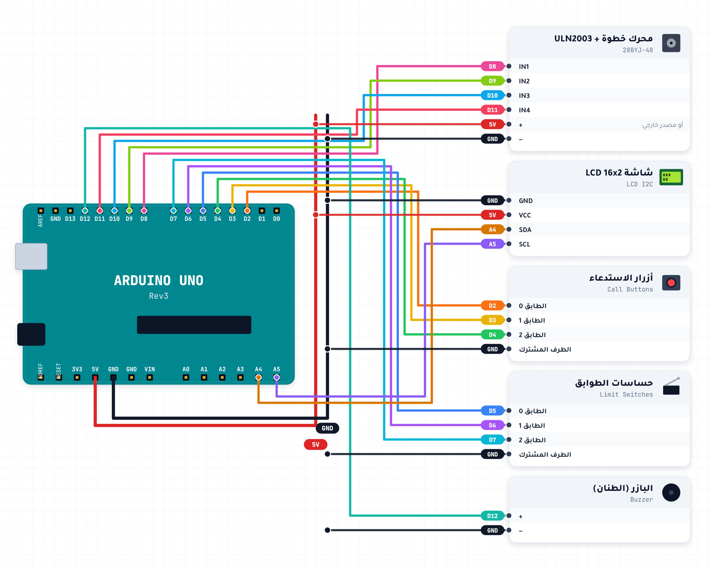

▶فيديو الشرح
نموذج مصعد حقيقي: أزرار استدعاء، محرك خطوة، حساس لكل طابق، وشاشة تعرض الحالة.
1المكونات
ARDUINO UNOboardمحرك خطوة + ULN200328BYJ-48شاشة LCD 16x2LCD I2Cأزرار الاستدعاءCall Buttonsحساسات الطوابقLimit Switchesالبازر (الطنان)Buzzerأسلاك توصيلJumper Wiresلوحة تجاربBreadboard
2مخطط التوصيل

اضغط على المخطط لتكبيره · نسخة SVG عالية الدقة
| القطعة | الطرف | يوصل إلى |
|---|---|---|
| محرك خطوة + ULN2003 | IN1 | D8 |
| محرك خطوة + ULN2003 | IN2 | D9 |
| محرك خطوة + ULN2003 | IN3 | D10 |
| محرك خطوة + ULN2003 | IN4 | D11 |
| محرك خطوة + ULN2003 | + | 5V أو مصدر خارجي |
| محرك خطوة + ULN2003 | − | GND |
| شاشة LCD 16x2 | GND | GND |
| شاشة LCD 16x2 | VCC | 5V |
| شاشة LCD 16x2 | SDA | A4 |
| شاشة LCD 16x2 | SCL | A5 |
| أزرار الاستدعاء | الطابق 0 | D2 |
| أزرار الاستدعاء | الطابق 1 | D3 |
| أزرار الاستدعاء | الطابق 2 | D4 |
| أزرار الاستدعاء | الطرف المشترك | GND |
| حساسات الطوابق | الطابق 0 | D5 |
| حساسات الطوابق | الطابق 1 | D6 |
| حساسات الطوابق | الطابق 2 | D7 |
| حساسات الطوابق | الطرف المشترك | GND |
| البازر (الطنان) | + | D12 |
| البازر (الطنان) | − | GND |
3الكود
المكتبات المطلوبة (من Arduino IDE ← Sketch ← Include Library ← Manage Libraries):
- LiquidCrystal I2C — Frank de Brabander
- Stepper (مدمجة)
/* المستوى المتقدم — المشروع 3: نظام المصعد الذكي ثلاثي الطوابق كتاب: 38 مشروع في شهر — لؤي النصري (@robotlouay) المكونات: محرك خطوة 28BYJ-48 + وحدة ULN2003 ، شاشة LCD I2C ، 3 أزرار ، 3 مفاتيح نهاية (Limit Switch) ، Buzzer التوصيل: ULN2003: IN1 → 8 IN2 → 9 IN3 → 10 IN4 → 11 + (5–12V خارجي) − → GND مشترك LCD I2C: SDA → A4 SCL → A5 VCC → 5V GND → GND أزرار الاستدعاء (بين المنفذ و GND): الطابق 0 → Pin 2 ، الطابق 1 → Pin 3 ، الطابق 2 → Pin 4 حساسات الطوابق (Limit Switch بين المنفذ و GND): 0 → Pin 5 ، 1 → Pin 6 ، 2 → Pin 7 Buzzer (+) → Pin 12 كل المدخلات تستعمل INPUT_PULLUP (القراءة LOW عند الضغط). إذا تحرك المصعد في الاتجاه الخطأ غيّر UP_DIR إلى -1. */ #include <Stepper.h> #include <Wire.h> #include <LiquidCrystal_I2C.h> const int STEPS_PER_REV = 2048; // 28BYJ-48 Stepper motor(STEPS_PER_REV, 8, 10, 9, 11); // ترتيب الملفات الصحيح لـ ULN2003 LiquidCrystal_I2C lcd(0x27, 16, 2); const int callBtn[3] = {2, 3, 4}; const int floorSensor[3]= {5, 6, 7}; const int BUZZER_PIN = 12; const int UP_DIR = 1; int currentFloor = 0; int targetFloor = 0; bool queue[3] = {false, false, false}; // طلبات الطوابق int direction = 0; // 1 صعود ، -1 نزول ، 0 متوقف void show() { lcd.setCursor(0, 0); lcd.print("Floor: "); lcd.print(currentFloor); lcd.print(" "); lcd.setCursor(0, 1); if (direction == 1) lcd.print("Going UP -> "); else if (direction == -1)lcd.print("Going DOWN -> "); else lcd.print("Ready "); if (direction != 0) lcd.print(targetFloor); } int sensedFloor() { for (int f = 0; f < 3; f++) if (digitalRead(floorSensor[f]) == LOW) return f; return -1; } void readButtons() { for (int f = 0; f < 3; f++) if (digitalRead(callBtn[f]) == LOW) queue[f] = true; } // يختار الهدف التالي: يكمل في نفس الاتجاه أولاً ثم يعكس (منطق المصاعد الحقيقية) int nextTarget() { if (direction >= 0) for (int f = currentFloor; f < 3; f++) if (queue[f]) return f; for (int f = currentFloor; f >= 0; f--) if (queue[f]) return f; for (int f = currentFloor; f < 3; f++) if (queue[f]) return f; return -1; } void arrive() { queue[currentFloor] = false; direction = 0; show(); tone(BUZZER_PIN, 1800, 300); // نغمة الوصول delay(1500); // الأبواب مفتوحة } void setup() { for (int i = 0; i < 3; i++) { pinMode(callBtn[i], INPUT_PULLUP); pinMode(floorSensor[i], INPUT_PULLUP); } pinMode(BUZZER_PIN, OUTPUT); motor.setSpeed(12); // دورة في الدقيقة lcd.init(); lcd.backlight(); // معايرة: النزول حتى حساس الطابق الأرضي lcd.print("Homing..."); while (digitalRead(floorSensor[0]) == HIGH) motor.step(-UP_DIR * 8); currentFloor = 0; lcd.clear(); show(); } void loop() { readButtons(); int t = nextTarget(); if (t < 0) return; // لا طلبات targetFloor = t; if (targetFloor == currentFloor) { arrive(); return; } direction = (targetFloor > currentFloor) ? 1 : -1; show(); // التحرك خطوة بخطوة حتى يلمس حساس الطابق المطلوب while (true) { motor.step(direction * UP_DIR * 8); readButtons(); // نقبل طلبات جديدة أثناء الحركة int f = sensedFloor(); if (f >= 0 && f != currentFloor) { currentFloor = f; show(); if (queue[f]) break; // توقف في طابق مطلوب في الطريق } } arrive(); }
هذا المشروع يعتمد على مكتبات أو لوحات غير متوفرة في mBlock 5، لذلك نستعمل Arduino IDE. انسخ الكود من تبويب Arduino IDE.
4كيف يعمل؟
- الأزرار تضيف الطوابق إلى قائمة الطلبات
- محرك الخطوة يرفع الكابينة أو يُنزلها
- مفتاح النهاية يؤكد الوصول للطابق
- الشاشة والبازر يعلنان الوصول
⚠ قبل توصيل الكهرباء: راجع كل سلك مع الجدول أعلاه، وتأكد من عدم وجود تماس بين 5V و GND. اختر اللوحة والمنفذ الصحيحين من قائمة Tools في Arduino IDE.